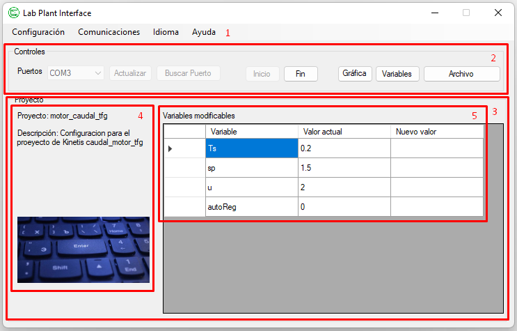
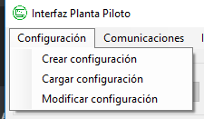
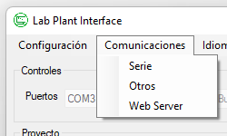
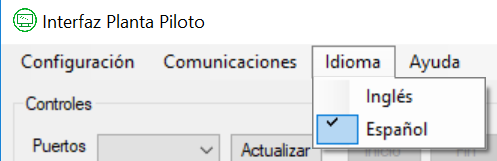
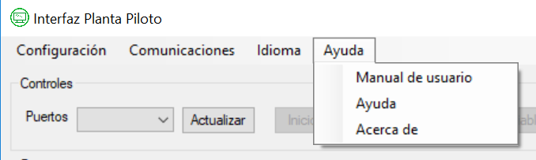

Ayuda para el Formulario Principal
A continuación se explicarán los apartados que componen el formulario principal de la aplicación Interfaz para Planta Piloto.
Secciones

- Menú principal.
- Controles de la aplicación.
- Detalles del proyecto cargado.
- Datos principales del proyecto.
- Listado de variables de escritura del proyecto.
Menú principal
Configuración
Contenido del menú "Configuración".

- Crear configuración:
elemento del menú que abre el formulario de configuración preparado para crear un nuevo proyecto.
- Cargar configuración:
elemento del menú que abre un cuadro de diálogo donde se elige una configuración creada y guardada
previamente. Antes de cargar la configuración en la aplicación principal se valida el archivo.
- Modificar configuración:
elemento del menú que carga el formulario de configuración preparado para editar el proyecto previamente
cargado en la aplicación.
Comunicaciones
Contenido del menú "Comunicaciones".

- Serie:
elemento del menú que establece que la comunicación con la placa será a través del puerto serie.
- Otros:
elemento del menú que establece que la comunicación con la placa será a través de otro puerto distinto al puerto serie.
- Web Server:
elemento del menú que abre el formulario de lanzamiento del servidor web.
Idioma
Contenido del menú "Idioma".

- Inglés:
elemento del menú que establece la información cultural con la que la aplicación trabaja a inglés.
- Español:
elemento del menú que establece la información cultural con la que la aplicación trabaja a español.
Ayuda
Contenido del menú "Ayuda".

- Manual de usuario:
elemento del menú que abre un archivo PDF con el manual de usuario de la aplicación.
- Ayuda:
elemento del menú que abre un arhivo CHM que implementa la ayuda para el uso de la aplicación.
- Acerca de:
elemento del menú que abre una ventana con la información referente a la autoría de la aplicación.